松江城 お堀の遊覧船に乗ってみた（お散歩カメラ 2026-05-24）

何となく空気が
今週は自宅に引きこもってたので，かなり運動不足。 というわけで，今日はたくさん歩こう。
午前中の用事を済ませて，松江駅ビル内でちょっと早い昼食。
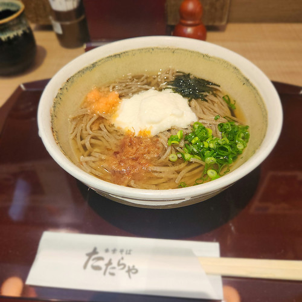
ここからどこに行こうか考えながら，とりあえず宍道湖沿いを松江城方面まで歩く。
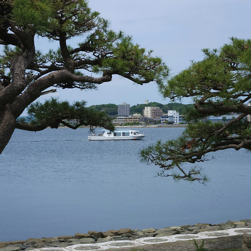
あるきながら「そういえばお堀の遊覧船にはまだ乗ったことがないなぁ」と思い出す。 とりあえず行ってみて，混雑してなければ乗ってみよう。
幸い，松江城そばの大手前広場乗船場はさほど混雑してなく30分待ちで乗れるとのことで，乗船券を買ってみた。
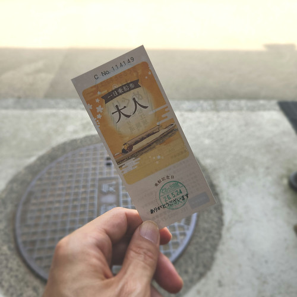
コースはこんな感じ。
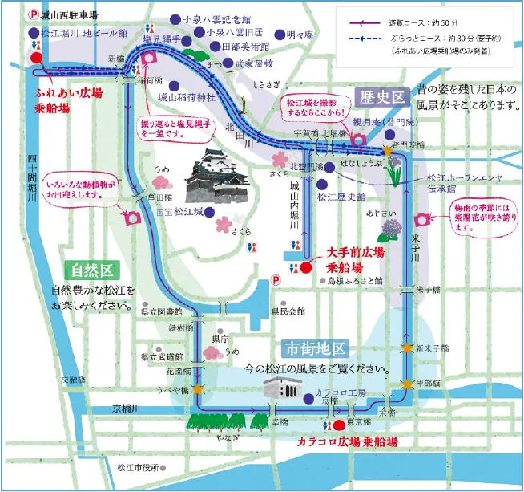
遊覧コースより
買った乗船券は当日内有効で，3箇所ある乗船場から何度でも乗下船できるそうな1。 1日有効なら大人2K円は，まぁ，高くはないのか？ あと，1周50分くらいかかるので事前にトイレを済ませとけとアドバイスされた。
乗船まで時間があるので OTEMAE MATSUE でいつもの特選抹茶ラテをいただく。
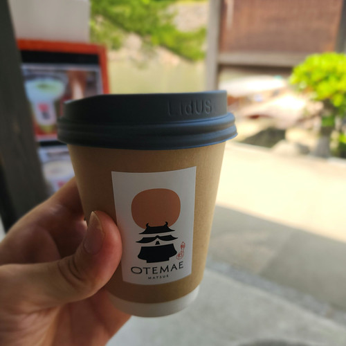
やっぱ温かいほうが抹茶の味がよく分かって美味しい。 すっかりやみつきだよ（笑）
そうこうするうちに時間になったので乗船。 以下は今回の船頭さん。
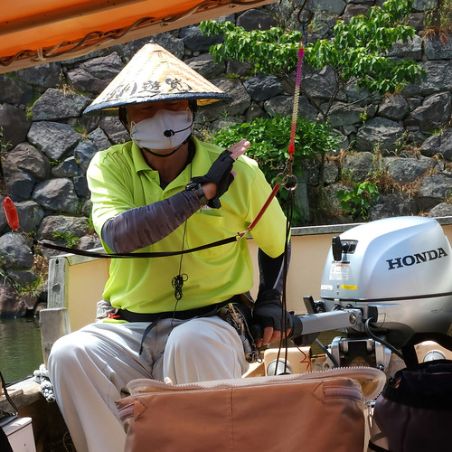
おー。 HONDA エンジンだ。 堀川遊覧船は2024年から電動エンジンを2隻配備と聞いているが，これは通常のガソリンエンジンのようだ。
ほんじゃあ，出発するかね。
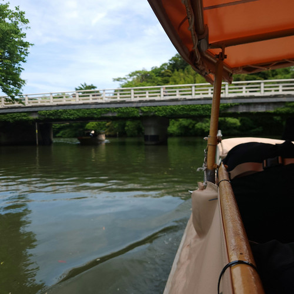
お堀に架かってる橋は船が通ることを想定して作られてないので水面と橋桁との間が狭い箇所が4つある。 どうするかというと，お客さんに屈んでもらって屋根を下げる。 こんな感じ。
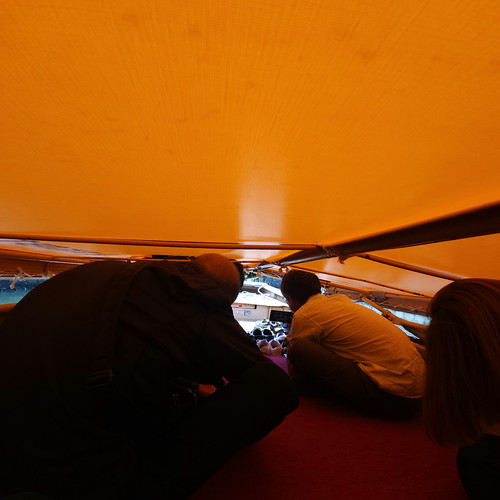
これはこれでなかなか面白かった。 でも普通はこんな感じで通り抜けられるよ。
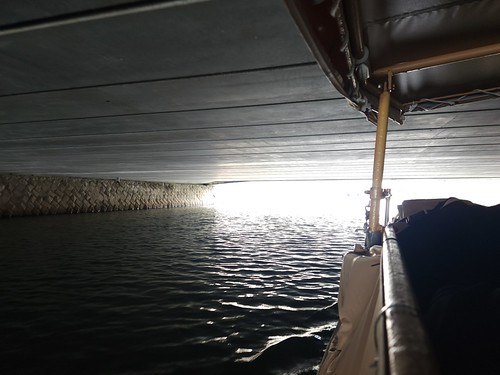
まぁ，ギリギリっぽいけど。
お堀の遊覧船の何が面白いって水面に近いところにいるから，ちょっとだけ見上げるような目線になるのだ。
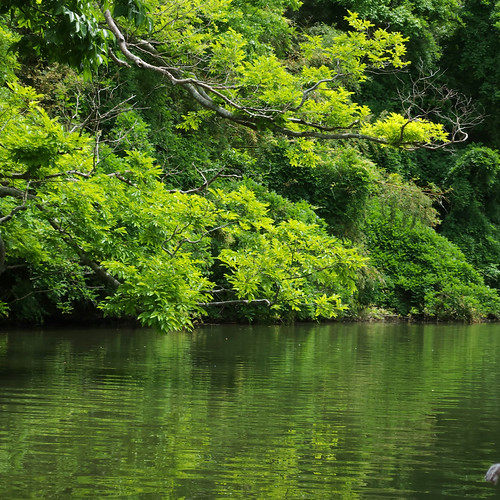
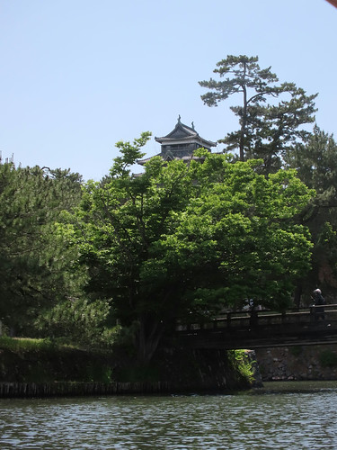
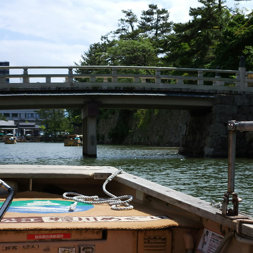
これは季節をかえてまた乗りたいな。 できれば次は電動エンジンで（選べるわけではないが）。
最後。 県立図書館近くの亀田橋の上から撮った写真。
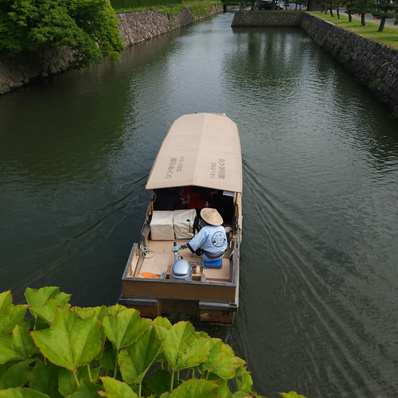
おあとがよろしいようで。 今日は13K歩歩けた。
-
遊覧船に乗る際は待ちが発生するので，既に乗船券を買っている場合でも受付で確認が必要。あと，大手前乗船場が発着場になっているので，ここを跨いで乗るのはダメだと思う。 ↩︎